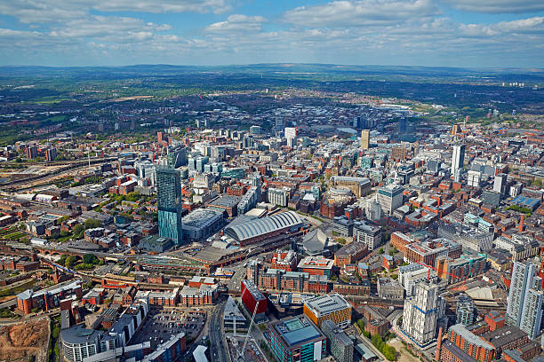
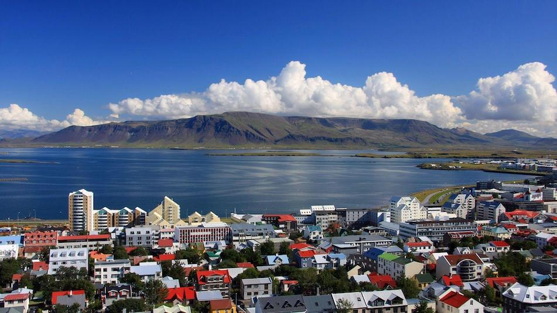

CHICAGO
Sur le lac Michigan, dans l'État de l'Illinois, Chicago fait partie des plus grandes villes des États-Unis. Célèbre pour son architecture audacieuse,

MANCHESTER
Grande ville du nord-ouest de l'Angleterre, Manchester possède un riche patrimoine industriel.

REYKJAVIK
Sur la côte islandaise, Reykjavik est la capitale et la plus grande ville du pays. Elle inclut le musée national et le musée des Sagas qui retracent l'histoire des Vikings d'Islande.

TOKYO
Capitale animée du Japon, Tokyo associe les styles ultramodernes et traditionnels, dans un mélange de gratte-ciel aux néons lumineux et de temples anciens.
CANCÚN
ville mexicaine de la péninsule du Yucatán bordée par la mer des Caraïbes, est célèbre pour ses plages, ses nombreuses stations balnéaires et sa vie nocturne.